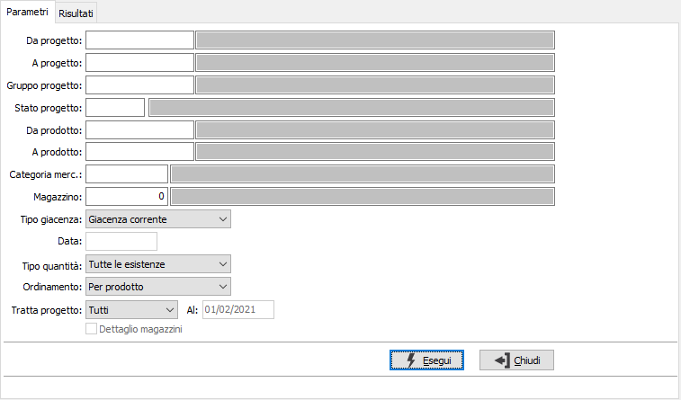
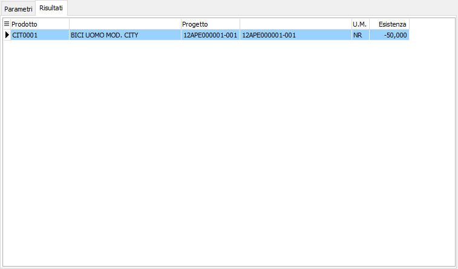

Analisi giacenze progetti
Il programma permette di visualizzare le giacenze complessive di uno o più progetti. Per ciascun progetto viene visualizzata l’esistenza.
È possibile analizzare le giacenze alla data corrente oppure ad una qualsiasi data precedente, da indicare.

DA PROGETTO: codice del progetto, da cui si desidera iniziare la selezione di analisi. Confermando a vuoto, la selezione inizia con il primo progetto valido. Sul campo è attiva la ricerca (F9) sull’anagrafica progetti.
A PROGETTO: codice del progetto con cui si desidera terminare la selezione di analisi. Confermando a vuoto, la selezione termina con l’ultimo progetto valido. Sul campo è attiva la ricerca (F9) sull’anagrafica progetti.
GRUPPO PROGETTO: eventuale codice del gruppo progetto, presente in anagrafica Gruppi progetti, per cui si desidera effettuare la selezione. Sul campo è attiva la ricerca (F9) sulla tabella.
STATO PROGETTO: eventuale codice dello stato progetto, dato presente in anagrafica progetti, per cui si desidera effettuare la selezione dei progetti da analizzare. Sul campo è attiva la ricerca (F9) sulla tabella.
DA PRODOTTO: codice articolo, da cui si desidera iniziare la selezione di analisi. Confermando a vuoto, la selezione inizia con il primo prodotto valido. Sul campo è attiva la ricerca (F9) sull’anagrafica prodotti.
A PRODOTTO: codice articolo, con cui si desidera terminare la selezione di analisi. Confermando a vuoto, la selezione termina con l’ultimo valido. Sul campo è attiva la ricerca (F9) sull’anagrafica prodotti.
CATEGORIA MERC.: codice della categoria merceologica a cui si vuole restringere la selezione di analisi. Sul campo è attiva la ricerca (F9) sulla tabella Categorie merceologiche.
MAGAZZINO: eventuale codice del magazzino per cui si vuole effettuare. Sul campo è attiva la ricerca (F9) F9 sulla tabella Magazzini.
TIPO GIACENZA: combo box per definire i criteri di analisi per data. Valori ammessi: Giacenza corrente (visualizza le giacenze attuali delle varianti); Giacenza alla data (da indicare; visualizza le esistenze alla data indicata dall’utente).
DATA: data, conseguente alla richiesta di Giacenza alla data, a cui si desidera riferire la selezione.
TIPO QUANTITÀ: combo box per filtrare le esistenze negative. Valori ammessi: Tutte le esistenze; Esistenze diverse da 0; Solo esistenze negative.
ORDINAMENTO PER: combo box per definire i criteri di ordinamento. Valori ammessi: Per prodotto; Per progetto.
TRATTA PROGETTO: combo box per definire lo stato dei progetti che si intende analizzare. Valori ammessi: Tutti, Aperto, Chiuso oppure Sospeso.
AL: collegata al campo precedente; indica la data in cui il progetto risulta nello stato indicato; il campo è attivo solo per gli stati Aperto e Chiuso.
DETTAGLIO MAGAZZINI: check box attivo nel caso di giacenze alla data, per definire i criteri di visualizzazione in caso di presenza in più magazzini dello stesso prodotto.
Confermando tramite pressione del bottone Selezione, vengono visualizzate nella linguetta Risultati le esistenze degli articoli selezionati; da questa sezione è possibile utilizzando i bottoni anteprima di stampa o stampa della tool bar, effettuare la stampa.
